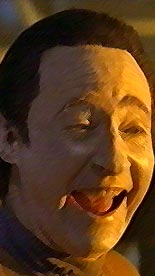

|

 |
Esta seo contm nosso repertrio de todo o tipo de material que faa graa com
Jornada nas Estrelas. O formato o mais livre possvel: charges, caricaturas, tiras de quadrinhos, histrias em quadrinhos completas, montagens de todo tipo, texto puro etc. |

|
Humor trekker
|